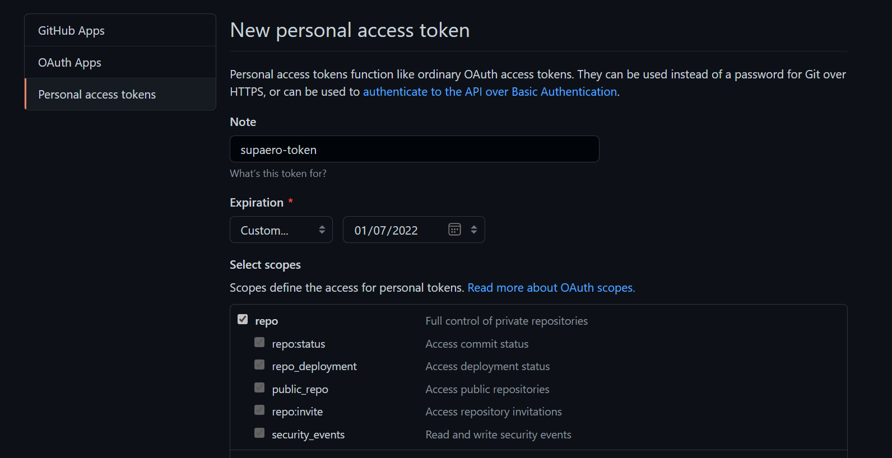

AIBT - Hands on
TOOLS
## Tools of this course As you can guest a lot of handy tools have arised since ML has become so popular. We will introduce here some of them in this first class. --- ## Python Python is a popular programming language and it is the one we will work with for several reasons: - It is beginner friendly and easy to use. - The community is huge. - Numerous tutorials, helps available on internet. - The ecosystem of libraries, frameworks, and tools is enormous and growing. -- ## Python As mentionned earlier the number of handy libraries is quite significant. Here are some of interests for this course: - [numpy](https://numpy.org/): fundamental package for scientific computing - [pandas](https://pandas.pydata.org/): data analysis and manipulation tool - [scikit-learn](https://scikit-learn.org/stable/): simple and efficient tools for predictive data analysis - [matplotlib](https://matplotlib.org/), [plotly](https://plotly.com/): vizualisations tools - [PyTorch](https://pytorch.org/): powerful deep learning framework -- ## Python If you have no prior knowledge on Python or need a little bit of refreshment here is a short introduction tutorial: <div style="text-align:center"><iframe width="540" height="200" src="https://www.youtube.com/embed/kqtD5dpn9C8" frameborder="0" allow="accelerometer; autoplay; encrypted-media; gyroscope; picture-in-picture" allowfullscreen></iframe></div> Or if rather read you can go to the [official python beginner tutorial](https://wiki.python.org/moin/BeginnersGuide/Programmers) -- ## Python Do not worry about having an IDE (Integrated Development Environment), we will see that a little bit later 😉. --- ## Git and GitHub <div style="text-align:center"><img width="200" height="52" alt="GitHub Logotype" class="height-auto" src="https://github.githubassets.com/images/modules/logos_page/GitHub-Logo.png"></div> > "GitHub is a provider of Internet hosting for software development and version control > using Git. It offers the distributed version control and source code management (SCM) > functionality of Git, plus its own features." > > <div style="text-align:right"><cite><a href="https://en.wikipedia.org/wiki/GitHub">- Wikipedia</a></cite></div> -- ## Git and GitHub <div style="text-align:center"><img width="200" height="52" alt="GitHub Logotype" class="height-auto" src="https://github.githubassets.com/images/modules/logos_page/GitHub-Logo.png"></div> Note that: - Git is a [Version Control System](https://git-scm.com/video/what-is-version-control) - GitHub is a Git server -- ## Git and GitHub Do not worry we won't require an exhaustive knowledge of `git` and GitHub just some basis. <div text-align="center"></div> -- ## Git and GitHub ### Exercise <div class="center" text-align="center"> It is time to get all the courses materials hosted on GitHub! First, go to <a href="https://github.com/">GitHub</a> and sign in </div> -- ### Exercise - Go to your Settings <div text-align="center"></div> -- ### Exercise - Go to Developper Settings <div text-align="center"></div> -- ### Exercise - Go to Personal access tokens - Select Generate new token <div text-align="center"><img src="imgs/git_settings3.png" width="700" height="auto"></div> -- ### Exercise - Config the access token <div text-align="center"></div> -- ### Exercise - Copy the generated token <div text-align="center"></div> - Save it somewhere safe and easy to access -- ### Exercise Congrats 🎉🔥! We are now ready to set our working environment and to download the repository which will contain all the course materials. In order to do so, we will now open a command shell! ```shell ~/firstname.name$ ``` If you have never touch a shell in your life, this [cheat sheet](http://www.mathcs.emory.edu/~valerie/courses/fall10/155/resources/unix_cheatsheet.html) may interest you! -- ## Git and GitHub ### Get course materials We first need to `clone` the repository ```shell ~/firstname.name$ git clone https://github.com/lucashervier/aibt.git ``` The command shell will ask you for your credentials *i.e* you GitHub id and the token we previously created -- ### Get course materials The course is downloaded, it is now time to go to your course folder ```shell ~/firstname.name$ cd aibt ``` And since it is the first lesson we'll go the corresponding folder ```shell ~/aibt$ cd 1_introduction ``` For practical reasons, we recommend that for each lessons to create a student folder in each course classes and to copy the `*.ipynb` files to that location. ```shell ~/1_introduction$ mkdir student ~/1_introduction$ cp *.ipynb student/ ``` -- ### Get course materials Lessons would be added for every lesson. In order to get it you will need to go back to the aibt folder location and to make a `git pull` command. ```shell ~/1_introduction$ cd .. ~/aibt$ ``` Once there at the beginning of every class you should do a `git pull` to get the updates of the course ```shell ~/aibt$ git pull ``` --- ## Setting up your working environment As a good practice, it is nice to have a Python environment per project, especially to avoid inconvenient versionning conflict. ```shell ~/aibt$ module load python/3.7 ~/aibt$ python -m venv aibt_venv ``` We just created a virtual environment for Python, we will now activate this environment (don't forget to do it every time). ```shell ~/aibt$ . aibt_venv/bin/activate (aibt_venv) ~/aibt$ ``` -- ## Setting up your working environment Now we have an empty Python environment! We will add the library we previously talked about ```shell (aibt_venv) ~/aibt$ pip install -r requirements.txt ``` We are soon ready to tackle our first Use Case ! --- ## Jupyter Notebook <div style="text-align:center"><img width="200" height=auto alt="Jupyter Logotype" class="height-auto" src="imgs/jupyter_logo.png"></div> > " The [Jupyter](https://jupyter.org/) Notebook is an open-source web application that allows you to create and share > documents that contain live code, equations, visualizations and narrative text. " > > <div style="text-align:right"><cite><a href="https://jupyter.org/">- Jupyter Org</a></cite></div> -- ## Jupyter Notebook Load and set our virtual environment as the default python kernel in Jupyter ```shell (aibt_venv) ~/aibt$ python -m pip install jupyter (aibt_venv) ~/aibt$ ipython kernel install --name "aibt_venv" --user ``` Now we can open jupyter: ```shell (aibt_venv) ~/aibt$ jupyter notebook& ``` -- ## Jupyter Notebook Here is what you should see: <div text-align="center"><img src="imgs/jupyter_home.png" width="50%" height="auto"></div> Don't forget to go to the notebook in your student folder to run a notebook. -- ## Jupyter Notebook To help you, you can get this [cheat sheet](https://www.edureka.co/blog/wp-content/uploads/2018/10/Jupyter_Notebook_CheatSheet_Edureka.pdf). To use a little bit more the markdown potential of jupyter then you should look at this [cheat sheet](https://www.ibm.com/docs/en/db2-event-store/2.0.0?topic=notebooks-markdown-jupyter-cheatsheet). If you want to go a little bit deeper you can check this tutorial: <div style="text-align:center"><iframe width="540" height="200" src="https://www.youtube.com/embed/HW29067qVWk" frameborder="0" allow="accelerometer; autoplay; encrypted-media; gyroscope; picture-in-picture" allowfullscreen></iframe></div> --- ## What To remember - At the beginning of each course go to your aibt folder and get all the updates: ```shell ~/firstname.name$ cd aibt ~/aibt$ git pull ``` - Go to the class folder and copy all the `*.ipynb` files in a student folder ```shell ~/aibt$ cd class_folder ~/class_folder$ mkdir student ~/class_folder$ cp *.ipynb student/ ~/class_folder$ cd .. ~/aibt$ ``` -- ## What To remember - Activate your virtual environment ```shell ~/aibt$ . aibt_venv/bin/activate (aibt_venv) ~/aibt$ ``` - Launch jupyter once its done ```shell (aibt_venv) ~/aibt$ jupyter notebook & ``` You can of course do all those steps at home to play again those notebooks! --- ## A word on today's UC Today Use Case will have 80 features towards houses. One of them being the sale price. This feature is what we call the **target** variable that we will try to predict. The other 79 variable have different properties that we will deeply investigate on in order to make as accurate prediction as possible. The models we will use here won't exhaustively explained since it would be the point of next classes. Please, see them as a black box function for now.